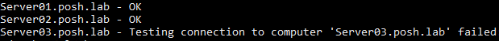

Windows
PowerShell
Misc
- Docs, Sample Scripts
- Use
Get-Help <cmdlet-name>to access help information for specific cmdlets. - Check version:
$PSVersionTable- For a breakdown of the version number (e.g. build, revison, etc.):
$PSVersionTable.PSVersion
- For a breakdown of the version number (e.g. build, revison, etc.):
- Update to latest stable version: github
- Comments:
# comment - Clear terminal:
clearorclsorClear-Host - Run Powershell Script:
.\my-script.ps1- Before you’ll be able to run a (first?) script, you need to open PowerShell as administrator and execute this command:
Set-ExecutionPolicy RemoteSigned
- Before you’ll be able to run a (first?) script, you need to open PowerShell as administrator and execute this command:
- Single Wildcard:
?- Example: Matching for
am?would give you files named “amy” “amd” and “am3.”
- Example: Matching for
- Shortcuts
- Run selected PowerShell code in current terminal using F8
- Launch online help for the symbol under the cursor using Ctrl + F1
Loops
Iterables
Arrays :
$folders = @('C:\Folder','C:\Program Files\Folder2','C:\Folder3')$_(Docs)- Automatic Variable; Alias for $PSItem
- Docs for automatic variables
- Useful for looping through objects in a directory. See “Change Name (or Extensions) of Multiple Files” for an example of usage
- Get the properties of an object
Example: Using
Get-ItemProperty(Docs)Get-ItemProperty scrapsheet.txt | Format-List- Property names will be on the left side of the output
Example: Using
Get-Member(Docs)Get-ChildItem *.txt | Select-Object -First 1 | Get-Member- Selects the first text file in the directory and gets the Properties and a bunch of other stuff like methods which also can be used with
$_ - Descriptions are awful for a lot of the stuff, but for the most part, you can guess what the property is.
- Selects the first text file in the directory and gets the Properties and a bunch of other stuff like methods which also can be used with
- Some properties that can be used with
$_- File System Objects:
.Name: Returns the name component of a file.FullName: Returns the full path of the file..Length: Returns the size of the file in bytes..CreationTime: Returns the date and time the file was created..LastWriteTime: Returns the date and time the file was last modified..IsReadOnly: Returns$trueif the file is read-only,$falseotherwise.
- Process Objects:
.Id: Returns the unique identifier (PID) of the process..Name: Returns the name of the process..MainWindowTitle: Returns the title of the process’s main window (if applicable)..WorkingDirectory: Returns the working directory of the process..CPU: Returns the CPU usage of the process.
- Registry Objects:
.Name: Returns the name of the registry key..Hive: Returns the hive of the registry key (e.g.,HKLM,HKCU)..Value: Returns the value of the registry key (if applicable)..Path: Returns the full path of the registry key.
- File System Objects:
- Automatic Variable; Alias for $PSItem
Foreach
Uses a typical for-loop structure
See Snippets for an example of iterating over the output of
Get-ChildItemIterate over an array
# Create an array of folders $folders = @('C:\Folder','C:\Program Files\Folder2','C:\Folder3') # Perform iteration to create the same file in each folder foreach ($i in $folders) { Add-Content -Path "$i\SampleFile.txt" -Value "This is the content of the file" }- $i is the for-loop variable and $folders is the iterable
Add-Contentcreates a text file in each of the folders in the array.
ForEach-Object
Similar to {purrr::map}
Iterable is piped into
ForEach-Object$folders = @('C:\Folder','C:\Program Files\Folder2','C:\Folder3') $folders | ForEach-Object (Add-Content -Path "$_\SampleFile.txt" -Value "This is the content of the file")Example: Generate Multiple Files
# Create a directory for the output files New-Item -ItemType Directory -Path "output" -Force # Loop through numbers 0 to 9 and create empty files 0..9 | ForEach-Object { $fileName = "output/sample_{0:D3}.txt" -f $_ New-Item -ItemType File -Path $fileName } Write-Host "Files created in the output directory."{0.D3} says use 3 digits and make sure there leading zeros for single or double digit numbers
Files that get created
output/sample_000.txt output/sample_001.txt output/sample_002.txt ...
ForEach Method
Similar to using Pyhon’s
applyon an iterable.Method applied an array
$folders = @('C:\Folder','C:\Program Files\Folder2','C:\Folder3') $folders.ForEach({ Add-Content -Path "$_\SampleFile.txt" -Value "This is the content of the file" })
Commands
Change directories
Set-Location "Documents\R\Projects"Create a New Folder
New-Item -ItemType Directory -Path "Folder Name"- Assumes you’re already in the directory that you want the folder in. You can also use a path, e.g.
"C:\Temp\Documents\New Folder\Subfolder1\\Subfolder2". - -Force can be added at the end to ensure that the directory is created even if a directory with the same name already exists in the current location.
- Without it, powershell will throw an error if it already exists
- Commonly used when you want to perform an operation that might overwrite or replace existing data, and you want to suppress any confirmation prompts or errors that might occur.
- Assumes you’re already in the directory that you want the folder in. You can also use a path, e.g.
Change Name of File
Rename-Item -Path "c:\logfiles\daily_file.txt" -NewName "monday_file.txt"Change Name (or Extensions) of Multiple Files
Get-ChildItem *.md | Rename-Item -NewName { $_.Name -replace '.md','.qmd' }Get-ChildItem: cmdlet gets all the files in the current folder that have a .mc file extension- Results piped to
Rename-Item- NewName: Has a value that’s a script block that runs before the value is submitted to the NewName parameter.
- $_: (automatic variable) It represents each file object as it comes to the command through the pipeline.
- -replace: Operator replaces the file extension of each file with .qmd.
- Notice that matching using the -replace operator is not case sensitive.
- NewName: Has a value that’s a script block that runs before the value is submitted to the NewName parameter.
Execute a File
Invoke-Item configuration.cmdMulti-line Commands
ffmpeg -i input.mkv -map 0:v:0 ` -map 0:a:2 -map 0:a:0 -map 0:a:1 -map 0:a:3 ` -map 0:s -c copy ` -disposition:a:0 default ` reordered.mkvIn bash, it’s a backslash (\), but in Powershell, it’s a backtick ( ` )
*Don’t forget that there’s a space between the last character and the backtick.*
In practice, this will look like
ffmpeg -i .input.mkv -map 0:v:0 ` >> -map 0:a:2 -map 0:a:0 -map 0:a:1 -map 0:a:3 ` >> -map 0:s -c copy ` >> -disposition:a:0 default ` >> reordered.mkv
String Matching
Print line with pattern
Select-String -Path "file*.txt" -Pattern "error" file1.txt:3:This is the error line of the file file2.txt:3:This is the error line of the file file3.txt:3:This is the error line of the file- Matches the 3rd line of each file
Get stats on a process
Get-Process -Name chrome- Handles: The number of handles that the process has opened.
- NPM(K): The amount of non-paged memory that the process is using, in kilobytes.
- PM(K): The amount of pageable memory that the process is using, in kilobytes.
- WS(K): The size of the working set of the process, in kilobytes. The working set consists of the pages of memory that were recently referenced by the process.
- VM(M): The amount of virtual memory that the process is using, in megabytes. Virtual memory includes storage in the paging files on disk.
- CPU(s): The amount of processor time that the process has used on all processors, in seconds.
- ID: The process ID (PID) of the process.
- ProcessName: The name of the process. For explanations of the concepts related to processes, see the Glossary in Help and Support Center and the Help for Task Manager.
Variables
Types
$a = 12 # System.Int32 $a = "Word" # System.String $a = 12, "Word" # array of System.Int32, System.String $a = Get-ChildItem C:\Windows # FileInfo and DirectoryInfo typesClear variable value
Clear-Variable -Name <variable_name>Delete Variable
Remove-Item -Name <variable_name>Change format
[datetime] $dates = "09/12/91"- From string to datetime
Environment Variables
Create an environment variabl
New-Item -Path Env:\Foo -Value 'Bar'Fooenvironment variable with a value ofBar
Set an environment variable
Set-Item -Name PYTHONSTARTUP -Value C:\path\to\pythonstartup.pySame expression to modify existing environment variable
Or
$Env:QUARTO_DENO_EXTRA_OPTIONS = "--v8-flags=--max-old-space-size=8192"
Delete environment variable
Remove-Item -Path Env:\Foo* -VerboseVerify value of an environment variable
$Env:<variable_name>
Ports
Find application using a port.
netstat -aon | findstr ':80' netstat -anp | find ":80"- If port 80 is being used by the application, it will return a PID. Then you can find it in Task Manager >> Processess
List all Listening and Established ports
netstat -anobCheck for processes using a port
Get-Process -Id (Get-NetTCPConnection -LocalPort 80).OwningProcessTest connection to local port to see if it’s open
Test-NetConnection -ComputerName localhost -Port 80 | Select-Object TcpTestSucceededCheck firewall settings for an app
netsh advfirewall firewall show rule name="name_of_app"
Snippets
Example: Read in name of servers and ping each of them
$servers = Get-Content .\servers.txt foreach ($server in $servers) { try { $null = Test-Connection -ComputerName $server -Count 1 -ErrorAction STOP Write-Output "$server - OK" } catch { Write-Output "$server - $($_.Exception.Message)" } }Get-Contentreads the server names from each line in the the server.txt fileforeachiterates through the server namestrytests the connection andcatchoutputs an error message if a server fails.- If
Test-Connectionfails the error message is stored in the$nullvariable - The error message line has an interesting syntax
$_is an automatic variable that represents$nullwhich contains the error message which is selected by.Exception-Message.$()evaluates the expression
Example: Take files from a directory and iterate them as inputs to a function.
$directory = "C:\Users\me\Documents\AnyCap Screen Recorder" # Define the FFmpeg command $ffmpegCommand = '-i {0} ' + '-c:v libx265 ' + '-crf 28 ' + '-preset medium ' + '-vf scale=-1:720 ' + '-c:a copy ' + 'C:\Users\me\Documents\temp-storage\{1}' # Get all files in the directory $files = Get-ChildItem -Path $directory ` -Filter "*.mp4" # Loop through each file and apply the FFmpeg command foreach ($file in $files) { # Construct the full command with the current file path $fullCommand = $ffmpegCommand -f "`"$($file.FullName)`"", $file.Name # Execute the FFmpeg command Start-Process -FilePath "ffmpeg.exe" ` -ArgumentList $fullCommand ` -Wait ` -NoNewWindow } Write-Host "Finished processing files!"$ffmpegCommandvariable is a concantenated string using multiple lines for readability.{0}and{1}are placeholders to be filled in later.- Note the space included at the end of each argument before the single quote since there’s no space included during concantenation.
Get-ChildItemretrieves files from the specified directory ($directory).- -Filter filters files that match the pattern (e.g.,
*.mp4).
- -Filter filters files that match the pattern (e.g.,
The
foreachloop iterates through each file ($file) in the$filescollection.-f flag stands for format. Says to replace {0} and {1} in the
$ffmpegCommandtemplate with these properties."`"$($file.FullName)`""- Since the directory name has spaces in it, extra quotes must included in order for the path to be quoted within the output string. A quoted file path in necessary for
ffmpegto be able to read a directory name with spaces in it. $file.FullName: This is the full path of the current file. It is enclosed in$()to ensure that the property is properly evaluated and its value is included in the string.- If there were no spaces in the directory name, then
$file.FullNameis only thing that would be required. Everything else in this description could be discarded
- If there were no spaces in the directory name, then
`"$($file.FullName)`": The double quotes"..."are used to create a string literal. Placing the entire expression$($file.FullName)within these double quotes ensures that the value of$file.FullNameis treated as a single string, even if it contains spaces or special characters.- The backticks are escape characters in PowerShell and indicate that the double quotes should be treated as literal characters and not as operators formatting a string.
"`"\$(\$file.FullName)`"": The additional double quotes at the beginning and end are used to format the expression as string for when it’s used as an argument inStart-Process.- The resulting path in the ffmpeg argument will look like:
"<full file path>".
- Since the directory name has spaces in it, extra quotes must included in order for the path to be quoted within the output string. A quoted file path in necessary for
Start-Processlaunchesffmpeg.exewith the constructed$fullCommandarguments.-Waitensures the command finishes before continuing.-NoNewWindowsays run ffmpeg in the same console window and don’t open a new one.
Example: Use a counter to create a hierarchy of file names
# Define the directory containing the files $directory = "C:\Users\me\Documents\temp-storage" # Define the FFmpeg command (replace with your desired command) $ffmpegCommand = '-i {0} ' + '-f segment -segment_time 4140 ' + '-c copy ' + 'C:\Users\me\Documents\temp-storage\output\{1}' # Get all files in the directory $files = Get-ChildItem -Path $directory ` -Filter "*.mp3" $counter = 0 # Loop through each file and apply the FFmpeg command foreach ($file in $files) { $output_file = "Mistborn-02-The-Well-of-Ascension-{0:D2}-" -f $counter + "%02d.mp3" # Construct the full command with the current file path $fullCommand = $ffmpegCommand -f "`"$($file.FullName)`"", $output_file # Execute the FFmpeg command Start-Process -FilePath "ffmpeg.exe" ` -ArgumentList $fullCommand ` -Wait ` -NoNewWindow $counter++ } Write-Host "Finished processing files!"- Similar to previous example except the
ffmpegexpression splits each of the iterated files into multiple files. - -f inserts the value of $counter into the string at {0:D2} (2 digits with a leading 0).
- This is the first level of the hierarchy representing the current file being iterated
- %02d is specific to
ffpmpeg. It tells it to enumerate the file names it creates to have 2 digits with a leading 0. $counter++adds 1 to the current value of the variable- The output has file names like
Mistborn-02-The-Well-of-Ascension-02-03.mp3which is 3rd file that was created from splitting the 2nd iterated file.
- Similar to previous example except the
{kind=link}
Batch Scripting
Misc
- Resources
- To keep the prompt window open after script execution, place these either of these commands at end of your script.
pause: Keeps window open until you press any key.- Via timer: e.g.
timeout /t 300 cmd /k: The prompt will remain active and you can execute additional commands manually.
Example: Create variables and execute
@echo off rem Set the path to the Rscript executable set RSCRIPT="C:\Users\user\AppData\Local\Programs\R\R-4.2.3\bin\Rscript.exe" rem Set the path to the R script to execute set RSCRIPT_FILE="C:\Users\user\my_r_script.R" rem Execute the R script %RSCRIPT% %RSCRIPT_FILE% rem Pause so the user can see the output exit@echo off- This line turns off the echoing of commands in the command prompt window, making the output cleaner.rem- Keyword that denotes a comment in a batch file.set RSCRIPT=- This line assigns the path to the Rscript executable to the environment variable RSCRIPT.set RSCRIPT_FILE=- The path to the R script file is assigned to the environment variable RSCRIPT_FILE.%RSCRIPT% %RSCRIPT_FILE%- Executes the R script using the Rscript executable and passes the path to the R script file as an argument.exit- This command exits the batch file and closes the command prompt window.
Example: Exit if script errors
Rscript "C:\Users\ercbk\Documents\R\Projects\Indiana-COVID-19-Tracker\R\collection\build-opentab-dat.R" REM if the data building script errors, bat script terminates without running other scripts or commands if %errorlevel% neq 0 exit /b %errorlevel% cd "C:\Users\ercbk\Documents\R\Projects\Indiana-COVID-19-Tracker" git add data/YoY_Seated_Diner_Data.csv git commit -m "opentab data update" git pull git push EXIT
WSL
Resources
Notes from
Load Linux:
wsl -d Ubuntu-22.04where -d is for –distributionStop Linux
- all distros:
wsl shutdown - 1 distro:
wsl terminate <distro name>
- all distros:
Exit linux terminal back to command prompt or powershell:
exitWSL Help:
wsl --helpWSL Version:
wsl --versionAvailable Linux Distributions and the version of WSL they’re installed under
PS C:\Users\tbats> wsl --list --verbose NAME STATE VERSION * Ubuntu-22.04 Stopped 2- Version 2 says 22.04 is working in WSL 2
Uninstall a distribution:
wsl --unregister <distro name>Update WSL:
wsl --update--web-download: Download the latest update from the GitHub rather than the Microsoft Store.
Download apps
sudo apt install <app>Update Linux Distro
sudo apt update sudo apt upgradeWSL Configs:
- Global config affects all distributions and the Distribution config on affects that particular distribution
- Global Config:
C:\Users\<user name>\.wslconfig- Docs
- The .wslconfig file does not exist by default. It must be created and stored in your
%UserProfile%directory to apply these configuration settings.
- Distribution Config:
- Docs
- Type
\\wsl.localhostin file explorer path box- Or if you know the name of the distribution:
\\wsl.localhost\Ubuntu-22.04\etc - Creates a Network connection to
wsl.localhost
- Or if you know the name of the distribution:
- Click on the particular distribution
- Go to
etc\wsl.conf
Paths
Ubuntu mounts the Windows C: drive at
/mnt/c/Windows locates the Ubuntu root directory at
\wsl.localhost\Ubuntu-22.04Root Paths
Folder: Ubuntu path (bash): Windows path (PowerShell): Ubuntu user directory /home/<linux user name>\wsl.localhost\Ubuntu-22.04\home\<linux user name>Windows user directory /mnt/c/Users/<windows user name>C:\Users\<windows user name>Example:
- Locating the
Projectsfolder on the Linux file system while in Bash,/home/<linux user name>/Projects - Locating the
Projectsfolder on the Linux file system while in PowerShell,\wsl.localhost\Ubuntu-22.04\home\<linux user name>\Projects
- Locating the
Increase RAM allocation and number of processors
Defaults:
- WSL limits distros to only 50% of your total memory on Windows
- The same number of logical processors on Windows
Setting in
.wslconfig# Settings apply across all Linux distros running on WSL 2 [wsl2] # Limits VM memory to use no more than 4 GB, this can be set as whole numbers using GB or MB memory=4GB # Sets the VM to use two virtual processors processors=2- [wsl2] is a section label even though all the settings underneath it aren’t indented. I’m guessing all settings underneath it belong to it until another section heading is encounterd.